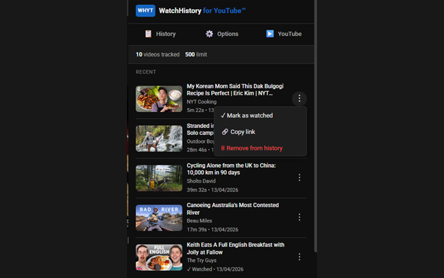

Watch on YouTube
As you watch, the extension records the video, channel, and progress needed to help you find it again.
Track your YouTube history locally. Resume videos where you left off - with complete privacy and no cloud sync.
Works even when signed out or with YouTube watch history disabled.
WatchHistory is an independent, open-source browser extension designed to bring local-first history tracking to YouTube. Built using native browser storage like IndexedDB, the extension operates entirely on your device with zero external server dependencies. The project is fully transparent and community-driven. Anyone can audit the source code, suggest new features, or contribute to the project directly on GitHub.
WatchHistory quietly keeps track of the videos you watch, so your viewing progress stays useful without becoming someone else's data.
As you watch, the extension records the video, channel, and progress needed to help you find it again.
Your history and settings are saved in your browser's local storage, including IndexedDB and browser extension storage.
Search your history, see watched and resume badges, or return to a video at the point where you stopped.
No. WatchHistory stores its history data locally in your browser and does not operate a cloud sync service or collect analytics about your viewing activity.
Yes. The extension keeps its own local history, so it can work when you are signed out or when YouTube watch history is paused.
Yes. Export your history as JSON from the extension's options, then keep backup copies in multiple places, such as an external drive and a trusted cloud storage provider. You can import the file later when you need to restore your history.
Automatically save your entire watch history locally with high-performance IndexedDB storage. No arbitrary limits.
Pick up exactly where you left off. Every video is tracked to the second, resuming automatically on your next visit.
"Resume" and "Watched" tags appear directly on YouTube thumbnails. Easily toggleable in settings.
Clean up your YouTube experience by removing Shorts from home, subscriptions, and search feeds.
Find videos instantly by title or channel. Toggle "hide watched" to focus on what you haven't seen yet.
Videos are automatically tagged as "watched" when you reach 95% progress. No manual marking required.
Track time actually spent watching or listening in buffered sessions. Progress and video duration update frequently, while watch-time records stay lightweight.
Choose whether hidden YouTube tabs count toward watch time. Enable it for music, podcasts, livestreams, or videos playing while you use another tab.
Recognize livestreams and livestream replays, preserve channel details, and include active viewing or listening time in your statistics.
Pause all tracking for the current session with a single click. Perfect for private browsing moments.
Back up and restore your watch history as JSON. Keep your data safe and portable.
All dashboards automatically adapt to your system's light or dark mode preference.
WatchHistory uses native browser storage technologies to ensure maximum privacy and performance. No cloud sync. No tracking. No external servers.
Video history archive with high-speed search performance and unlimited storage capacity.
User settings managed locally for fast, optimized access during page loads.
We don't track your usage, analyze your data, or use tracking pixels. Ever.
Fully auditable code on GitHub. See exactly what we do with your data.

Advanced search & filters

Resume badges on thumbnails

Watched & resume tags in-feed

Quick-action context menu

Fully configurable settings

Quick-access popup
Have feedback, suggestions, or found an issue? Reach out!